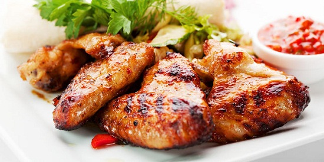

Ayam Bakar Bumbu Bali
Resep dan Cara Membuat Ayam Bakar Bumbu Bali yang Enak, Lezat dan Sedap
Sajian ayam bakar bumbu Bali adalah hidangan yang enak dan mudah untuk dibuat dirumah Untuk itulah, resep ini begitu direkomendasikan bagi anda yang sudah tak sabar ingin mengetahui seperti apa membuat hidangan kali ini. Untuk itu, yuk simak resep membuat ayam bakar bumbu bali berikut ini.
Waktu Memasak
- Persiapan Memasak: 35 Menit
- Memasak: 50 Menit
- Total: 85 Menit
Jumlah Porsi
4 Porsi
Bahan Bahan Yang Dibutuhkan :
Bahan Utama Ayam :
- 1 Ekor Ayam
- 1/2 Sendok teh pala bubuk
- 3 lembar daun jeruk
- 2 sendok teh gula merah
- 2 batang serai
- 2 lembar daun Salam
- 3 butir cengkeh
- 1/2 sendok teh merica bubuk
- 1 sendok makan garam
- 100 ml air
- 3 sendok makan minyak untuk menumis
- 1/2 Sendok teh pala bubuk
- 3 lembar daun jeruk
- 2 sendok teh gula merah
- 2 batang serai
- 2 lembar daun Salam
- 3 butir cengkeh
- 1/2 sendok teh merica bubuk
- 1 sendok makan garam
- 100 ml air
- 3 sendok makan minyak untuk menumis
Bumbu Ayam Yang Dihaluskan
- 5 siung bawang putih
- 3 ruas jahe
- 4 ruas lengkuas
- 10 butir bawang merah
- 15 buah cabe rawit
- 18 butir kemiri
- 3 ruas kencur
- 1 sendok teh terasi
Bumbu Untuk Sambal Bali
- 3 siung bawang putih,iris halu
- 1 sendok teh garam
- 10 buah cabe rawit
- 1/2 sendok teh terasi
- 1 sendok teh gula pasir
- 2 batang serai memarkan
- 5 butir bawang merah
- 3sendok makan minyak untuk menumis
Cara Membuat Ayam Bakar Bumbu Bali
- Untuk yang pertama kali bisa dilakukan adalah dengan membersihkan ayamnya. Hal ini penting sekali karena ayam harus dibersihkan dan dicuci hingga bersih secara merata. Akan tetapi, sebelum itu pastikan jika anda memotong ayam terlebih dahulu. Untuk potongan ayam, disini anda bisa memotongnya dengan ukuran sebanyak 4 potongan. Namun, jika anda merasa ukuran potongan ini terlalu besar, maka silahkan sesuaikan ukuran potongan dengan ukuran yang anda inginkan.
- Masukkan ayam yang sudah dipotong kedalam wadah dan bawa ayam ke tempat cucian untuk kemudian ayam akan siap untuk dicuci dengan bersih.
- Pastikan jika anda membersihkan ayam secara merata. Bersihkan pula bulu-bulu halus yang masih tersisa pada ayam. Jika ayam sudah bersih secara merata, silahkan angkat ayam kedalam wadah semula dan sisihka sementara.
- Jangan lupa untuk membersihkan dan meniriskan air cuciannya secara merata agar air tidak menggenang dalam baskom.
- Untuk membersihkan bau amis yang menempel pada ayam, maka silahkan lumuri ayam dengan menggunakan air jeruk nipis dan garam. Remas-remas dan aduk-aduk secara merata sampi bumbu meresap kedalamnya dan sisihkan selama kurang lebih 10 menit.
Cara Membuat Ayam Bakar Bumbu Bali
- Panaskan terlebih dahulu bumbu halus dalam wajan yang telah diberikan minyak dan juga sudah dipanaskan. Aduk-aduk secara merata sampai bumbu halus yang anda tumis mengeluarkan aroma harum yang enak dan lezat.
- Setelah itu, masukkan daun salam, daun jeruk, pala bubuk, cengkeh dan juga serai. Aduk-aduk secara merata sampai bahan ini layu dan mengeluarkan aroma harum.
- Kemudian, masukkan potongan ayam kedalam tumisan bumbu dan masukkan air bersama dengan gula, garam dan juga merica bubuk. Masak ayam dengan menggunakan api yang kecil sampai ayam empuk dan kuahnya mengental kira-kira selama kurang lebih 20 menit. Setelah itu, baru angkat sajian ini dan sisihkan sementara.
- Siapkan panggangan dengan menggunakan bara api atau wajan anti lengket. Setelah itu, tempatkan ayam dibagian atasnya dan bakar hingga ayam matang secara merata. Jangan lupa untuk membulak-balik ayam agar tidak gosong.
Setelah ayam matang, angkat sajian ini dan hidangkan dalam pirng saji untuk kemudian ayam akan siap disantap selagi masih hangat.